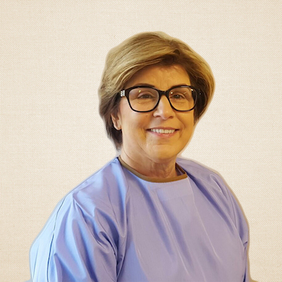

I grew up in Lake Oswego and graduated from Lakeridge and Linfield, followed by Oregon Health Science University. As a patient, I grew up going to see Dr. Eckmann, and he’s one of the main reasons I went into the dentistry field. Being active and involved in the community, along with the ability and time to help people with kindness and compassion, were things I wanted to be able to do. Having worked in a few different states through the years, with many other doctors, I’ve been able to continue learning and honing my professional skills to most effectively treat patients. I’m a member of the American Dental Association, as well as the Oregon Dental Association in both Clackamas and Multnomah County.
GINA
Gina Braganza has been in the dental field since 1988. She has a Bachelor's degree in Business Administration with a concentration in marketing. She got her Dental Assistant Certification at PCC. She enjoys everything about dentistry and building a relationship with patients. During her spare time, she enjoys cooking, karaoke, and outdoor activities.

LINDA
Linda has lived in the Portland Metro area for most of her life. She graduated from Franklin High School in 1975 and started her dental career. She looks forward to working with each patient and keeping them and/or their parents informed of treatment and care. Linda is married with four children, two step sons, and four grandchildren. When Linda is not working, she is remodeling her home with husband Ron, walking her two dogs, and enjoying family.
TYLER
Tyler has been in the dental field since 1984 as a registered Dental Hygienist. She enjoys working with a variety of people and getting to know her patients, individually, providing high quality care. Tyler is happily married with three grown children. She enjoys traveling, cooking, and spending time with her family and friends.